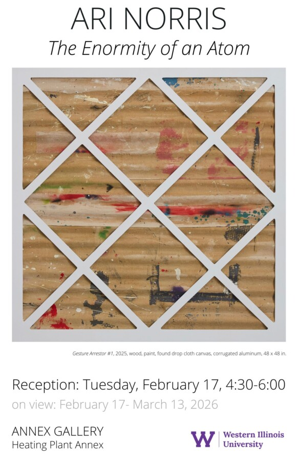

Ari Norris: The Enormity of an Atom
Ari Noris “The Enormity of an Atom”
On View: February 17 – March 13, 2026
Reception: Tuesday, February 17, 4:30-6:00 pm
ANNEX Gallery, Heating Plant Annex
Western Illinois University
Macomb, Illinois
Rockford artist, Ari Norris, will have his solo exhibition, “The Enormity of and Atom”, on display February 17 through March 13 at the Western Illinois University ANNEX Gallery.
A reception for the artist will be held Tuesday, February 17, 4:30-6:00 p.m. The artist will speak about his work at 5:00 pm.